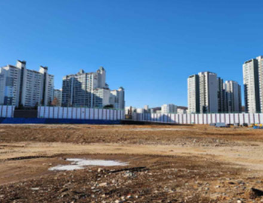
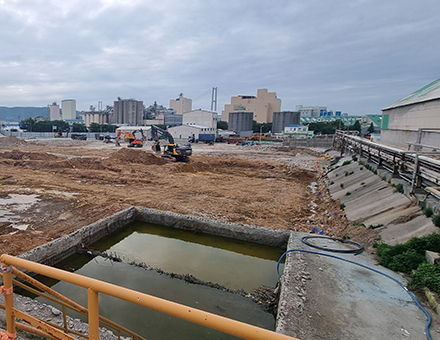
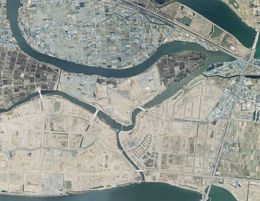
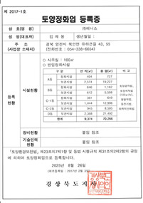
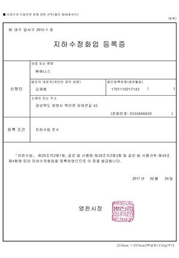
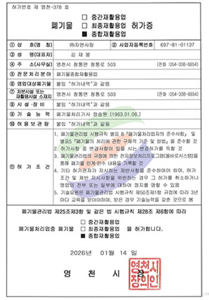
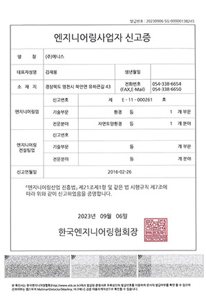
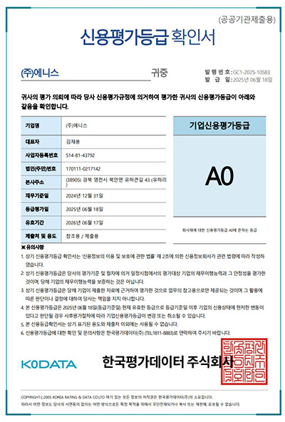

사업실적·면허
환경복원 현장의 기록




주요 업무수행 실적
반출정화 사업 중 1억 원 이상 준공 사업 기준 · 회사소개서 2024년판
46건
실적 건수 · 2016~2024(진행 중 3건 포함)
849억 원
실적금액 합계 · 84,935,033,509원
220억 원
최대 단일 사업 · 방배5구역 사업부지 토양정화공사(2024)
| 번호 | 사업명 | 실적금액(원) | 사업준공일 | 공법 |
|---|---|---|---|---|
| 1 | 19화생방대대 토양오염복원공사 | 119,366,000 | 2016-06-27 | 경작 |
| 2 | 창원시 의창구 동읍 용잠리 용잠주유소 오염토양정화공사 | 179,300,000 | 2016-10-31 | 경작 |
| 3 | 00부대 토양오염정화공사(16-1511) | 420,632,820 | 2017-09-09 | 경작 |
| 4 | 차량공장토양오염정화공사 | 245,866,639 | 2019-01-27 | 경작 |
| 5 | 부산·진해경제자유구역 명지지구 오염토 정화용역 | 1,169,707,940 | 2019-07-29 | 세척 |
| 6 | 영천완산동e편한세상아파트(1블럭) 신축공사내 오염토양정화처리용역(반출정화) | 1,553,414,000 | 2019-09-26 | 경작 |
| 7 | 영천완산동e편한세상아파트(2블럭) 신축공사내 오염토양정화처리용역(반출정화) | 297,308,000 | 2019-09-26 | 경작 |
| 8 | 석포초등학교&중학교 운동장 오염토양 정화공사 | 898,663,898 | 2019-11-30 | 세척 |
| 9 | 00부대 보은지역 훈련장 토양오염정화공사 | 1,041,500,400 | 2019-12-10 | 세척 |
| 10 | 영천시 대창면 조곡리일대 토양정화공사 계약 | 490,123,400 | 2019-12-20 | 경작 |
| 11 | 00부대 토양오염정화공사(19-1216) | 1,252,986,190 | 2020-03-21 | 경작/세척 |
| 12 | 선창산업㈜ 부산시 사상구 감전동 505-6, 505-7번지 오염토양처리(정화)계약 | 1,017,610,000 | 2020-06-15 | 경작/세척 |
| 13 | 전차중대 토양오염 복원 정화공사 | 435,162,526 | 2020-07-22 | 경작 |
| 14 | 대구역오페라W신축공사 오염토양처리용역 | 1,023,000,000 | 2020-08-26 | 세척 |
| 15 | (19-357)00부대 토양오염정화 본공사(별내) | 2,243,400,620 | 2021-03-31 | 경작 |
| 16 | 대구 오페라 스위첸 신축현장 오염토양 정화사업 | 994,730,061 | 2021-05-26 | 경작/세척 |
| 17 | 신항만 수산물관광타운 신축부지 오염토양 정화사업 | 247,500,000 | 2021-05-26 | 세척 |
| 18 | 대구역 제일풍경채 위너스카이 신축공사 오염토양 처리용역 | 2,474,406,088 | 2021-05-27 | 세척 |
| 19 | 목포시 석현동 제일풍경채아파트 신축공사 오염토양 정화공사 | 6,311,800,000 | 2021-08-31 | 경작/세척 |
| 20 | 해링턴플레이스 달서구 감삼3차 부지 오염토양 반출정화 용역 | 2,095,208,182 | 2022-03-09 | 세척 |
| 21 | 21-충-토양-4시설공사(진천) | 313,907,000 | 2022-05-20 | 경작 |
| 22 | 칠성동2가321 주거복합 토양정화 반출 용역 | 3,009,793,600 | 2022-05-30 | 세척 |
| 23 | 현대백조타운 주택재건축정비사업 중 오염토양 정화 및 반출 용역 | 1,694,349,000 | 2022-06-28 | 세척 |
| 24 | 옥련동 오염토양 정화공사 | 957,704,000 | 2022-06-30 | 경작 |
| 25 | ㈜유니온케미칼 익산 신축공사부지 토양오염정화 | 255,150,000 | 2023-02-21 | 경작/세척 |
| 26 | 힐스테이트 서대구역센트럴 사업부지 토양정화공사(가칭) | 487,142,900 | 2023-03-09 | 세척 |
| 27 | 전남 목포 부지 오염토양 반출정화사업 | 2,636,363,636 | 2023-03-09 | 경작/세척 |
| 28 | 상암천 하천저질토 및 삼일동 일원 오염토양 정화공사 | 347,422,500 | 2023-06-30 | 열탈착 |
| 29 | 의왕 오전나구역 재개발사업 중 오염토 토공 및 정화공사 | 632,697,450 | 2023-07-10 | 세척 |
| 30 | 인천도화동힐스테이트도화더테라스 | 322,005,760 | 2023-07-26 | 세척 |
| 31 | 고양 풍동2지구 도시개발사업 공동주택 A-3BL | 1,606,263,700 | 2023-08-03 | 세척 |
| 32 | 인천검단지구 AA-15BL 공동주택 신축공사 | 885,949,900 | 2023-08-04 | 세척 |
| 33 | 경기도 안양시 만안구 박달동 617-12번지 외 4필지 반출정화용역 | 943,892,000 | 2023-12-01 | 열탈착 |
| 34 | 대명3동 뉴타운주택재개발정비사업 오염토양 정화용역 업체 선정 | 2,263,703,200 | 2023-12-26 | 세척 |
| 35 | 현대제철 포항1공장 토양오염 정화공사 | 272,276,000 | 2024-01-04 | 열탈착 |
| 36 | ㈜팜한농 울산 원예공장 부지 오염토양 정화공사 | 4,093,000,000 | 2024-02-15 | 세척 |
| 37 | 방배5구역 사업부지 토양정화공사 | 22,059,481,405 | 2024-02-23 | 세척 |
| 38 | 동구 신천동 311-4 주거복합 신축공사 오염토양 정화용역 | 1,145,955,160 | 2024-03-15 | 세척 |
| 39 | 의왕시 내손라구역주택재개발사업 토양정화용역 | 2,272,727,273 | 2024-03-22 | 세척 |
| 40 | STX중공업 내동공장토양오염 정화공사 | 254,000,000 | 2024-04-09 | 열탈착 |
| 41 | 대구시 서구 비산동 1665, 1666번지 토양오염 정화공사 | 391,000,000 | 2024-04-16 | 열탈착 |
| 42 | 산성구역 주택재개발정비사업 중 토양오염 정화공사 용역 | 3,196,529,200 | 2024-04-23 | 세척 |
| 43 | 익산시 중앙동 현장오염토양 반출정화용역 | 818,000,000 | 2024-05-21 | 세척 |
| 44 | 부산에코델타시티 조성사업(3단계) 토양정화용역 | 2,897,297,061 | 진행중 | 경작/세척 |
| 45 | 삼정 브리티시 감삼 주거복합 신축공사 토양오염정화공사 | 566,736,000 | 진행중 | 경작/세척 |
| 46 | 부천소사 공동주택 신축공사 토양오염 정화사업 | 6,100,000,000 | 진행중 | 세척 |
| 총 46건 | 84,935,033,509 |
보유 특허 15건
등록 8건 + 2024년 출원 7건 · 회사소개서 2024년판
| 번호 | 기술명 | 등록·출원번호 | 등록일/출원일 | 비고 |
|---|---|---|---|---|
| 1 | 모듈식 수저오염퇴적물 정화처리시스템 및 공법 | 10-150037 | 15.07.29 | KIOST 기술이전 |
| 2 | 모듈식 싸이클론 | 10-1609737 | 16.03.31 | KIOST 기술이전 |
| 3 | 수저오염퇴적물 정화처리 시스템 | 10-1426519 | 14.07.29 | KIOST 기술이전 |
| 4 | 미세기포 전처리를 포함하는 수저퇴적물 정화처리 공정 | 10-1426518 | 14.07.29 | KIOST 기술이전 |
| 5 | 오염토양폭기시스템 | 10-1936399 | 19.01.02 | 자사특허 |
| 6 | 수은 흡착제 및 이의 제조방법 | 10-2117507 | 20.05.26 | 자사특허 |
| 7 | 수은오염퇴적물 정화시스템 | 10-2086587 | 20.03.03 | 자사특허 |
| 8 | 건식 오염자갈 세척시스템 | 10-2210752 | 21.01.27 | 자사특허 |
| 9 | 이산화탄소 흡수제 조성물 | 10-2024-0027093 | 24.02.26 | 자사특허(출원) |
| 10 | 이산화탄소 흡착 시스템 | 10-2024-0027094 | 24.02.26 | 자사특허(출원) |
| 11 | 오염토양 정화용 세척시스템 | 10-2024-0085640 | 24.06.28 | 자사특허(출원) |
| 12 | 오염토양 정화 관제시스템 | 10-2024-0085642 | 24.06.28 | 자사특허(출원) |
| 13 | 침전조 | 10-2024-0085644 | 24.06.28 | 자사특허(출원) |
| 14 | 유량조정침사지 | 10-2024-0085646 | 24.06.28 | 자사특허(출원) |
| 15 | 오염토양 정화용 침전시스템 | 10-2024-0085649 | 24.06.28 | 자사특허(출원) |
면허·인증
토양정화업 등록 · 지하수정화업 등록 · 엔지니어링사업자 신고 · 건설업 등록 · 폐기물재활용업 허가 · 기술평가 우수기업 인증(NICE, 2022) · 환경표지 인증 · 신용평가등급 A+(한국평가데이터, 2023)




